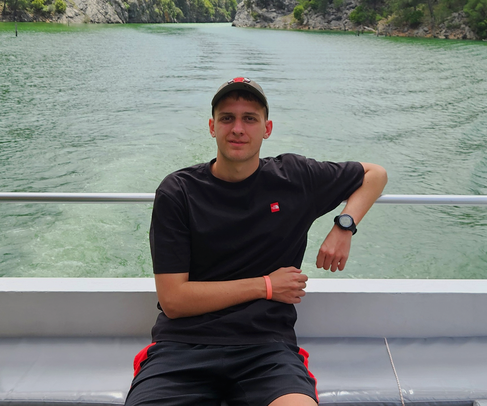

<code>
Cześć! Jestem początkującym programistą i uczniem szkoły średniej. Choć jeszcze nie pracuję zawodowo w branży IT, codziennie rozwijam swoje umiejętności i uczę się programowania. Na tym etapie bardziej niż na zarobkach zależy mi na zdobywaniu doświadczenia, budowaniu portfolio i rozwijaniu praktycznych umiejętności. Tworzenie stron internetowych i poznawanie nowych technologii to coś, co naprawdę mnie wciąga i motywuje do działania.
Poza komputerem lubię spędzać czas aktywnie — gram w piłkę nożną, często chodzę po górach i biegam, żeby się odstresować i nabrać świeżej energii. Uważam, że równowaga między pasją a ruchem to klucz do dobrego samopoczucia i efektywnej pracy.
< O Mnie />
class MateuszKowalik {
constructor() {
this.name = 'Mateusz Kowalik';
this.dayOfBirthTimestamp = 1146117600;
this.email = 'mateusz.kowalik@example.com';
}
education() {
return [
{ '2021–2026': 'Technikum Informatyczne w Dobrzeniu Małym' }
];
}
workExperience() {
return [
{ '2024 (2 miesiące)': 'Stażysta w serwisie komputerowym' }
];
}
examsAndCertifications() {
return [
{ year: 2024, name: 'Egzamin INF.02' },
{ year: 2024, name: 'Cisco Networking Academy: IT Essentials' }
];
}
skills() {
return ['HTML', 'CSS', 'JavaScript'];
}
languages() {
return ['Polski (ojczysty)', 'Angielski (B2)'];
}
hobbies() {
return ['programowanie', 'chodzenie po górach', 'bieganie', 'piłka nożna'];
}
}